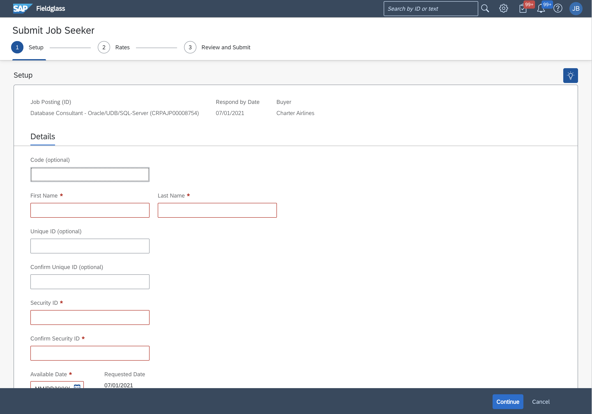
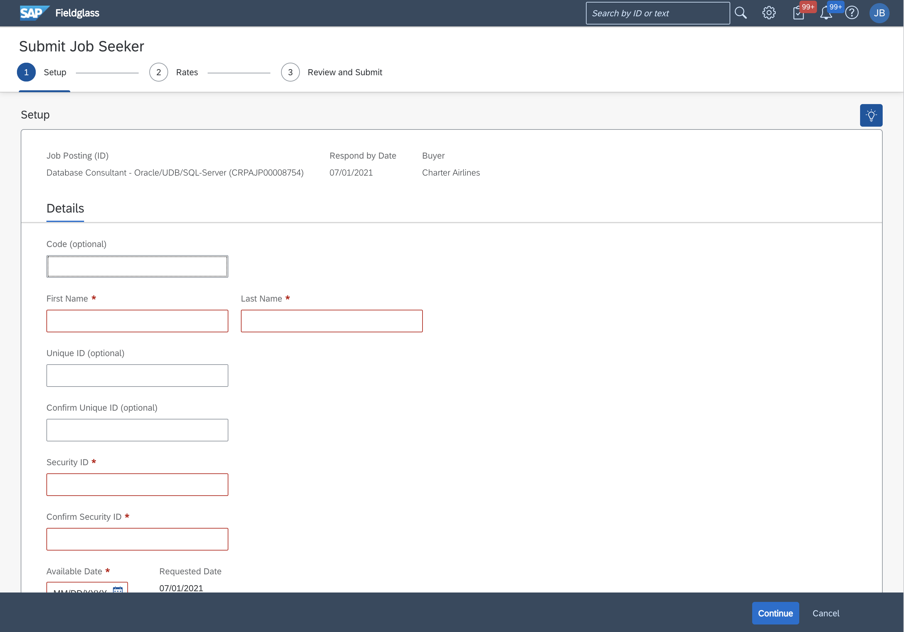

SAP Fieldglass
Reducing duplicate worker submissions in the SAP Fieldglass database
Project Overview
Background
SAP Fieldglass is a software company that helps businesses find and manage external talent.
Using SAP Fieldglass, companies post their open positions and staffing companies review and submit qualified workers.
Problem
Staffing companies were repeatedly creating multiple profiles for a single worker.
Goal
Reduce the number of duplicate profiles created
Team
Luke Soenen (UX Lead)
Roshini David (Dev Lead)
Janet Waligora (Product Specialist)
Kristin Kochajkiewicz (QA Lead)
Kaustubh Sarang (Additional Developer)
Lynne Williamson (Documentation)
Shawn Rodgers (Stakeholder)
Before
After
Design Process
User Flow
The flow for submitting a job seeker to a job posting.

Data Mining
How many duplicate workers have been created in the database
Assumptions
Initially our team assumed that users did not understand the difference between the options to submit a new worker or an existing worker.
User Interviews
To understand the difference why users did not take advantage of the submit existing feature, I reached out to people with experience submitting workers.
The response I received proved our initial assumptions wrong
According to the interviews, the users actually do have a clear understanding of the actions. However, the search functionality is just too difficult to use.
Also, we discovered that users only want to submit pre-existing workers 20% of the time. In most cases, they submit candidates that do not exist in the system.
Journey Mapping
To illustrate my findings from the interviews I created a journey map to share with the larger team.

Opportunities
Streamline the search process - Improve efficiency and reduce friction.
Prioritize new worker Account for the 80% scenario in new designs
Sketching & Ideation
Based on the data I started coming up with initial ideas. I kept the research in mind and focused on improving the search and prioritizing the new worker submission.
 



Mockups & Prototypes
After sharing the sketches with the larger team, it was decided idea of recommending workers was out of scope.
However, I was encouraged to continue exploring the other ideas and create mockups for them.
Additional Suggestions
- Chunking Form Steps
- Branded Moment
- Progressive Disclosure

Feedback and Iteration
After sharing the mockups with the larger team during our design sessions, I received a lot of feedback which revisiting and rethinking certain aspects of the design.
The team helped identify areas my designs were weak and strong and through incorporating their feedback, we were able to agree on this final design which is currently in development and set to be released in our next cycle.
Lessons Learned
Be Creative When Gathering Data
Access to users and resources might not always be available so be scrappy when it comes to interviews and data.
Never Assume the Problem
It is natural to assume what the issue is, but conducting research can often lead to discovering where the real issues lie.
Be Patient and Iterate
Not every idea can be implemented. Know when to compromise and pursue other options.
Propose Big Ideas then Scale Back
Ideas that you have are worth proposing, even if they are not possible. Often it can lead to other great ideas that are possible.